算法白话总结
- 参考: https://programmercarl.com/
- 推荐参考本博客总结的 algo_newbie , 和本文对照着看
概绍
本群的每日刷题打卡活动, 按照 GitHub 49k star的项目 https://github.com/youngyangyang04/leetcode-master 的刷题顺序.
跟着群里有个伴一起刷题或许更容易坚持达成每日一题的目标. 做完题目之后可以在群里的小程序”今日leetcode刷题打卡”里打卡.
- 网页版: 代码随想录 https://programmercarl.com/
- 本博客只记录那些有明显自我疑问而<<代码随想录>>没有说明清楚的题目, 会标识出来并注释
本文完整参考代码
https://github.com/no5ix/no5ix.github.io/blob/source/source/code/test_algo_na.java
常用小技巧
如何求一个数字有多少位数
public class DigitCount { |
从最高位数开始遍历一个数字
int number = 7893; |
从个位数开始遍历一个数字
public class DigitTraversal { |
Java常用接口和实现
Convert a number to a string and vice versa
int num = 123; |
随机数
方法1: (推荐)
- nextInt() 返回的是任意整数，范围包括负数和正数。
- nextInt(bound) 返回一个随机整数，范围是从 0 到 bound（不包括 bound）。
// 如果你想生成一个 1 到 100 之间的随机整数（包括1和100），可以这样写： |
方法2: (不推荐)
To generate a random number within the range
[3, 6], where both 3 and 6 are inclusive, you can modify the logic slightly from the[3, 6)approach:double randomNumber = 3 + (Math.random() * (6 - 3 + 1));
Math.random()generates a random number in the range[0.0, 1.0).- Multiplying it by
(6 - 3 + 1)(which is 4) adjusts the range to[0.0, 4.0). - Adding 3 shifts the range to
[3.0, 7.0). - Since the inclusive range is
[3, 6], you’ll need to truncate or floor the result if you’re generating an integer:int picked = (int) ((high - low + 1) * Math.random()) + low; - Notice: remember that
int picked = (int) (high - low + 1) * Math.random() + low;is not correct, because it will cause the error “incompatible types: possible lossy conversion from double to int”, you should always convert the multiplication result((high - low + 1) * Math.random())to an Integer but not(high - low + 1)only
值传递
- 记住：Java 中只有值传递！只是对于对象类型，值是对象的引用地址，这使得我们可以修改对象的内容，但不能改变对象的引用本身。
- 基本数据类型： 方法接收变量的值，修改不会影响原始变量。
- 对象类型：
- 方法接收的是对象引用的副本，可以通过引用修改对象内容。
- 方法不能改变引用本身的指向。
// 解释：在 changeReference 方法中，person 被赋值为一个新的对象，但这只是改变了方法内的 person 引用，并不影响 main 方法中 p 的引用。 |
排序
常用简单排序
// Arrays.sort 用于对数组进行排序（primitive 或 Object 类型）。 |
举例说明自定义数字排序规则, 使用 Comparator:
- Collections.sort
- Arrays.sort
sort by primitive type
using lambda
(a, b) -> a - b |
(a, b) -> b - a |
sort by int
以下例子的这个排序逻辑首先按列 col 排序，如果列相同，则按行 row 排序，再根据节点的值进行排序。排序优先级依次是：列、行、值// : List to store nodes with their column, row, and value
List<int[]> nodes = new ArrayList<>();
// nodes.add(new int[]{col, row, val});
nodes.add(new int[]{1, 2, 3});
nodes.add(new int[]{1, 3, 4});
nodes.add(new int[]{2, 2, 4});
// Sort nodes by column, row, and value
// 解释：
// • Collections.sort() 是 Java 中用于排序 List 的方法。它接受两个参数，第一个是需要排序的 List（在这里是 nodes），第二个是排序规则（通过 Comparator 来定义）。
// • 这是一个 lambda 表达式，它实现了 Comparator<int[]> 接口。tuple1 和 tuple2 是 nodes 中的元素（即 int[] 类型的数组）。tuple1 和 tuple2 是用来比较的两个元素。
Collections.sort(nodes, (tuple1, tuple2) -> {
// 排序规则:
// 1. 首先比较 tuple1[0] 和 tuple2[0]：
// 如果它们不相等（即列 col 不相同），则按列进行排序。
// 2. 如果列相同，则比较 tuple1[1] 和 tuple2[1]：
// 如果列相同，再按照行 row 进行排序。
// 3. 如果列和行都相同，则比较 tuple1[2] 和 tuple2[2]：
// 最后，如果列和行都相同，则按照节点的值进行排序。
if (tuple1[0] != tuple2[0]) {
// 这里的 tuple1[0] - tuple2[0] 是用来确定排序的方向。如果 tuple1[0] 小于 tuple2[0]，结果为负数，意味着 tuple1 排在 tuple2 前面；如果大于，结果为正数，tuple1 排在后面；如果相等，则继续比较后续条件。
return tuple1[0] - tuple2[0];
} else if (tuple1[1] != tuple2[1]) {
return tuple1[1] - tuple2[1];
} else {
return tuple1[2] - tuple2[2];
}
});
sort by char
举例说明自定义字母排序规则 (比如有个 List
import java.util.*; |
sort by wrapper type
using lambda and compareTo
(a, b) -> { return a.compareTo(b); } |
(a, b) -> { return b.compareTo(a); } |
实例:String[] arr = {"apple", "banana", "watermelon"};
// Arrays.sort(arr, (a, b) -> a.compareTo(b));
Arrays.sort(arr, (a, b) -> b.compareTo(a));
for (String s : arr) {
System.out.println(s);
}
result:watermelon
banana
apple
Map
Map<Integer, Integer> map = new HashMap<>(); |
Set
Set<Integer> set = new HashSet<>(); |
List
List<Integer> list = new ArrayList<>(); |
Queue
Queue<Integer> queue = new ArrayDeque<>(); // 不要用 LinkedList(除非你要往队列里插入null, 因为ArrayDeque不准插入null, 但是LinkedList可以), ArrayDeque用circular buffer实现的, 是最高效的: https://stackoverflow.com/questions/6129805/what-is-the-fastest-java-collection-with-the-basic-functionality-of-a-queue |
Deque
Deque<Integer> deque = new ArrayDeque<>(); // 不要用 LinkedList(除非你要往队列里插入null, 因为ArrayDeque不准插入null, 但是LinkedList可以), ArrayDeque用circular buffer实现的, 是最高效的: https://stackoverflow.com/questions/6129805/what-is-the-fastest-java-collection-with-the-basic-functionality-of-a-queue |
Stack(一般不用因为有性能问题)
注意!!! 在 Java 中，如果我们希望避免使用 Stack 类以减少同步带来的性能问题，可以使用其他不包含同步的集合类实现栈（stack）的功能，例如 Deque（双端队列）。Deque 接口的实现类如 ArrayDeque 都是很好的选择。Deque也可以直接 push, pop, peek
Stack<Integer> stack = new Stack<>(); |
String and Character
// Why use equals()? |
复杂度有啥用
留意数据规模, 不要以为复杂度分析是专门用来难为你的，它其实是来帮你的，它是来偷偷告诉你解题思路的。
你应该在开始写代码之前就留意题目给的数据规模，因为复杂度分析可以避免你在错误的思路上浪费时间，有时候它甚至可以直接告诉你这道题用什么算法。
为啥这样说呢，因为一般题目都会告诉我们测试用例的数据规模有多大，我们可以根据这个数据规模反推这道题能够允许的时间复杂度在什么范围，进一步反推我们应该要用什么算法。
举例来说吧:
- 比如一个题目给你输入一个数组，其长度能够达到 10^6 这个量级，那么我们肯定可以知道这道题的时间复杂度大概要小于 O(N2)，得优化成 O(NlogN) 或者 O(N) 才行。因为如果你写的算法是 O(N2) 的，最大的复杂度会达到 10^12 这个量级，在大部分判题系统上都是跑不过去的。
- 为了把复杂度控制在 O(NlogN) 或者 O(N)，我们的选择范围就缩小了，可能符合条件的做法是：对数组进行排序处理、前缀和、双指针、一维 dp 等等，从这些思路切入就比较靠谱。像嵌套 for 循环、二维 dp、回溯算法这些思路，基本可以直接排除掉了。
- 再举个更直接的例子，如果你发现题目给的数据规模很小，比如数组长度 N 不超过 20 这样的，那么我们可以断定这道题大概率要用暴力穷举算法。
- 因为判题平台肯定是尽可能扩大数据规模难为你，它一反常态给这么小的数据规模，肯定是因为最优解就是指数/阶乘级别的复杂度。你放心用回溯算法 招呼它就行了，不用想别的算法了。
所以说啊，很多读者看题都不看那个数据规模，上来就闷声写代码，这是不对滴。你先把题目给的所有信息都考虑进去，再写代码，这样才能少走弯路。
数组
诀窍
没有思路的时候思考以下方法:
- 口诀: “前二, 双排, 滑倒”
- 前缀和 (在涉及计算区间和的问题时非常有用！)
- 二分法(当遇到的一个序列是有序的要找一个数之类的问题, 就该用二分法了)
- 双指针
- 互相靠近: 双指针大多数时候是left指针在首, right在尾, 然后互相逐渐靠近
- 快慢指针: 或者一个快一个慢, right快(去寻找合适的数)
- 先排个序 (有些问题先排个序再处理就简单了)
- 滑动窗口 (求一个子区间的
最大和/最小和之类的东西) - 倒序遍历 (有些问题倒过来遍历就很简单)
二分法诀窍与易错点
- 为什么要
int mid = left + (right - left) / 2? 答案见下方代码中的注释 - 是
while (leftIndex <= rightIndex)还是while (leftIndex < rightIndex)(推荐后者, 因为网上都是后者)? 答案见下方代码注释或者这里 的讲解 - 二分查找, 如果使用
while (leftIndex < rightIndex), 当在数组中找不到对应的值, 循环完毕后的left和right的含义是什么?- 如果目标值不在数组中，循环结束时满足条件：right == left，循环结束后的 left 和 right 的含义如下:
- 因为 left一直在
left = mid + 1, 所以最终跳出循环时，left 会指向 第一个大于 target 的位置，或者数组末尾的下一个位置； - left/right 指向插入目标值的位置（满足排序要求）。
- left 是第一个大于目标值的位置（在数组中的索引）。
- 如果目标值比数组中所有元素都大，left 将等于数组的长度，即指向超出数组范围的位置。
- 因为 left一直在
- 情况 1：目标值在数组范围内，但不存在
- 数组为 [1, 3, 5, 7, 9]，目标值为 6。
- • 最终状态：
- • left = 3（第一个大于 6 的索引，值为 7）。
- • right = 3（第一个大于 6 的索引，值为 7）。
- 数组为 [1, 3, 5, 7, 9]，目标值为 6。
- 如果目标值不在数组中，循环结束时满足条件：right == left，循环结束后的 left 和 right 的含义如下:
- 二分查找, 如果使用
while (leftIndex <= rightIndex), 当在数组中找不到对应的值, 循环完毕后的left和right的含义是什么?- 如果目标值不在数组中，循环结束时满足条件：right < left，循环结束后的 left 和 right 的含义如下:
- left 的含义:
- left 指向插入目标值的位置（满足排序要求）。
- left 是第一个大于目标值的位置（在数组中的索引）。
- 如果目标值比数组中所有元素都大，left 将等于数组的长度，即指向超出数组范围的位置。
- right 的含义:
- right 是目标值的前一个可能位置（如果目标值存在的话）。
- right 是最后一个小于目标值的位置（在数组中的索引）。
- 如果目标值比数组中所有元素都小，right 将等于 -1，即在数组范围之外。
- 情况 1：目标值在数组范围内，但不存在
- 数组为 [1, 3, 5, 7, 9]，目标值为 6。
- • 最终状态：
- • left = 3（第一个大于 6 的索引，值为 7）。
- • right = 2（最后一个小于 6 的索引，值为 5）。
- 数组为 [1, 3, 5, 7, 9]，目标值为 6。
- 情况 2：目标值比数组中所有元素小
- 数组为 [3, 5, 7, 9]，目标值为 2。
- • 最终状态：
- • left = 0（第一个大于 2 的索引，值为 3）。
- • right = -1（数组范围之外）。
- 数组为 [3, 5, 7, 9]，目标值为 2。
- 情况 3：目标值比数组中所有元素大
- 数组为 [3, 5, 7, 9]，目标值为 10。
- • 最终状态：
- • left = 4（数组长度，超出范围）。
- • right = 3（最后一个索引，值为 9）。
- 数组为 [3, 5, 7, 9]，目标值为 10。
- 比如说给你有序数组
nums = [1,2,2,2,3], target 为 2，如果我想得到 target 的左侧边界，即索引 1，或者我想得到 target 的右侧边界，即索引 3, 怎么做呢?- 见下方代码的
left_bound和right_bound, 详细讲解请参考: https://leetcode.cn/problems/binary-search/solutions/8337/er-fen-cha-zhao-xiang-jie-by-labuladong/
- 见下方代码的
- https://programmercarl.com/0704.二分查找.html#二分法第一种写法
- https://leetcode.com/problems/binary-search/
class Solution { |
二分查找扩展题-lc69-求平方
class Solution { |
前缀和诀窍
- https://juejin.cn/post/7005057884555837476
- 前缀和理论基础: https://programmercarl.com/kamacoder/0058.区间和.html#思路
前缀和特别适合解决区间类的问题

p[5] - p[1] 就是 红色部分的区间和。
而 p 数组是我们之前就计算好的累加和，所以后面每次求区间和的之后 我们只需要 O(1) 的操作。
特别注意： 在使用前缀和求解的时候，要特别注意 求解区间。
如上图，如果我们要求 区间下标 [2, 5] 的区间和，那么应该是 p[5] - p[1]，而不是 p[5] - p[2]。
「前缀和」 是从 nums 数组中的第 0 位置开始累加，到第 iii 位置的累加结果，我们常把这个结果保存到数组 preSum 中，记为 preSum[i]。
下面以 [1, 12, -5, -6, 50, 3] 为例，讲解一下如何求 preSum 前缀和的另一种写法(在很多题里非常有用, 比如这题):

在前面计算「前缀和」的代码中，计算公式为 preSum[i] = preSum[i - 1] + nums[i] ，为了防止当 i = 0 的时候数组越界，所以加了个 if (i == 0) 的判断，即 i == 0 时让 preSum[i] = nums[i]。
在其他常见的写法中，为了省去这个 if 判断，我们常常把「前缀和」数组 preSum 的长度定义为 原数组的长度 + 1。preSum 的第 0 个位置，相当于一个占位符，置为 0。
那么就可以把 preSum 的公式统一为 preSum[i] = preSum[i - 1] + nums[i - 1]，此时的 preSum[i] 表示 nums 中 iii 元素左边所有元素之和（不包含当前元素 iii）。for (int i = 1; i <= gain.length; i++) {
prefixSum[i] = prefixSum[i - 1] + gain[i - 1];
}
// 或者
for (int i = 0; i < gain.length; i++) {
prefixSum[i + 1] = prefixSum[i] + gain[i];
}
lc528-前缀和+二分
- 前缀和理论基础: https://programmercarl.com/kamacoder/0058.区间和.html#思路
- https://leetcode.com/problems/random-pick-with-weight/
- https://leetcode.cn/problems/random-pick-with-weight/solutions/966335/cer-fen-xiang-jie-by-xiaohu9527-nsns/
lc528 Description:
You are given a 0-indexed array of positive integers w where w[i] describes the weight of the ith index.
You need to implement the function pickIndex(), which randomly picks an index in the range [0, w.length - 1] (inclusive) and returns it. The probability of picking an index i is w[i] / sum(w).
For example, if w = [1, 3], the probability of picking index 0 is 1 / (1 + 3) = 0.25 (i.e., 25%), and the probability of picking index 1 is 3 / (1 + 3) = 0.75 (i.e., 75%).
Example 1:
- Input
["Solution","pickIndex"][[[1]],[]]
- Output :
[null,0] - Explanation:
Solution solution = new Solution([1]);
solution.pickIndex(); // return 0. The only option is to return 0 since there is only one element in w.
Example 2:
- Input:
["Solution","pickIndex","pickIndex","pickIndex","pickIndex","pickIndex"][[[1,3]],[],[],[],[],[]]
- Output:
[null,1,1,1,1,0] Explanation:
Solution solution = new Solution([1, 3]);
solution.pickIndex(); // return 1. It is returning the second element (index = 1) that has a probability of 3/4.
solution.pickIndex(); // return 1
solution.pickIndex(); // return 1
solution.pickIndex(); // return 1
solution.pickIndex(); // return 0. It is returning the first element (index = 0) that has a probability of 1/4.Since this is a randomization problem, multiple answers are allowed.
All of the following outputs can be considered correct:
[null,1,1,1,1,0]
[null,1,1,1,1,1]
[null,1,1,1,0,0]
[null,1,1,1,0,1]
[null,1,0,1,0,0]
……
and so on.
Constraints:
- 1 <= w.length <= 104
- 1 <= w[i] <= 105
- pickIndex will be called at most 104 times.
class Solution { |
双指针诀窍
双指针和滑动窗口的一般不同点是:
- 互相靠近: 双指针大多数时候是left指针在首, right在尾, 然后互相逐渐靠近
- 快慢指针: 或者一个快一个慢, right快(去寻找合适的数), left慢的指针就处理right找到数据;
- 数组问题中比较常见的快慢指针技巧，是让你原地修改数组。比如说看下力扣第 26 题「删除有序数组中的重复项」，让你在有序数组去重
- 而滑动窗口一般也是right快left慢, 但滑动窗口为了维护一个区间窗口, 一般是用来求一个子区间的
最大和/最小和之类的东西 - 理论上滑动窗口是双指针的一种, 只是比较像一个窗口而故名
lc27-Remove Element
- https://programmercarl.com/0027.移除元素.html#算法公开课
- https://leetcode.com/problems/remove-element/description/
双指针法（快慢指针法）： 通过一个快指针和慢指针在一个for循环下完成两个for循环的工作。
定义快慢指针:
- 快指针：寻找新数组的元素 ，新数组就是不含有目标元素的数组
- 慢指针：指向更新 新数组下标的位置
诀窍: 应该想象成 slowIndex 之前的那些数组格子就是新的数组
class Solution { |
lc977-有序数组的平方
- https://programmercarl.com/0977.有序数组的平方.html#算法公开课
- https://leetcode.com/problems/squares-of-a-sorted-array/description/
class Solution { // lc977 |
lc15-3Sum
其实这道题目使用哈希法并不十分合适(4sum就没办法了)，因为在去重的操作中有很多细节需要注意，在面试中很难直接写出没有bug的代码。
接下来我来介绍另一个解法：双指针法(4sum也是这种思路)，这道题目使用双指针法 要比哈希法高效一些，那么来讲解一下具体实现的思路。
class Solution { |
lc18-4Sum
class Solution { |
滑动窗口模板与生动理论
- 滑动窗口一般也是right快left慢, 但滑动窗口为了维护一个区间窗口, 一般是用来求一个子区间的
最大和/最小和之类的东西 - 理论上滑动窗口是双指针的一种, 只是比较像一个窗口而故名
- https://leetcode.cn/problems/max-consecutive-ones-iii/solutions/609055/fen-xiang-hua-dong-chuang-kou-mo-ban-mia-f76z/
- 《挑战程序设计竞赛》这本书中把滑动窗口叫做
「虫取法」，我觉得非常生动形象。因为滑动窗口的两个指针移动的过程和虫子爬动的过程非常像：前脚不动，把后脚移动过来；后脚不动，把前脚向前移动。 - 滑动窗口中用到了左右两个指针，它们移动的思路是：以右指针作为驱动，拖着左指针向前走。右指针每次只移动一步，而左指针在内部 while 循环中每次可能移动多步。右指针是主动前移，探索未知的新区域；左指针是被迫移动，负责寻找满足题意的区间。
滑动窗口的复杂度
- 为啥是 O(N)？
- 肯定有读者要问了，你这个滑动窗口框架不也用了一个嵌套 while 循环？为啥复杂度是 O(N) 呢？
- 简单说，指针 left, right 不会回退（它们的值只增不减），所以字符串/数组中的每个元素都只会进入窗口一次，然后被移出窗口一次，不会说有某些元素多次进入和离开窗口，所以算法的时间复杂度就和字符串/数组的长度成正比。
- 反观嵌套 for 循环的暴力解法，那个 j 会回退，所以某些元素会进入和离开窗口多次，所以时间复杂度就是 O(N2) 了。
- 我在 算法时空复杂度分析实用指南 有具体教大家如何从理论上估算时间空间复杂度，这里就不展开了。
- 为啥滑动窗口能在 O(N) 的时间穷举子数组？
- 这个问题本身就是错误的，滑动窗口并不能穷举出所有子串。要想穷举出所有子串，必须用那个嵌套 for 循环。
- 然而对于某些题目，并不需要穷举所有子串，就能找到题目想要的答案。滑动窗口就是这种场景下的一套算法模板，帮你对穷举过程进行剪枝优化，避免冗余计算。
- 所以在 算法的本质 中我把滑动窗口算法归为「如何聪明地穷举」一类。
滑动窗口的模板
能解决大多数的滑动窗口问题：
def findSubArray(nums): |
lc1004-Max Consecutive Ones III
- https://leetcode.cn/problems/max-consecutive-ones-iii/solutions/609055/fen-xiang-hua-dong-chuang-kou-mo-ban-mia-f76z/
- https://leetcode.com/problems/max-consecutive-ones-iii/
class Solution { |
链表
诀窍
- 没有思路的时候想想快慢指针, 能解决大部分链表问题
- 单链表弄个虚拟头结点, 可以很省事
- 双链表弄个虚拟头结点和虚拟尾结点, 刚开始就让虚拟头尾相连, 可以很省事, 参见LRU里的那个, 如下:
this.head = new DLinkedNode(); // dummy
this.tail = new DLinkedNode(); // dummy
head.next = tail;
tail.pre = head; // 刚开始初始化的时候虚拟首尾节点的中间没有实际节点, 所以虚拟首尾节点是相连的.
lc206 - 链表反转
- https://programmercarl.com/0206.翻转链表.html#算法公开课
https://leetcode.com/problems/reverse-linked-list/description/
重要!!!!! 记忆口诀: 举一(head)反(反转)三(3个指针! pre! cur! temp!)
- 核心要点就是需要保存一个后面可能要用的结点就弄一个指针出来, 比如这个pre
// 双指针 |
lc24 - 两两交换链表中的节点
- https://programmercarl.com/0024.两两交换链表中的节点.html
重要!!!!! 记忆口诀(和反转链表很类似): 举一(1个dummyHead指针!)反(反转)三(3个指针! cur! node1! node2!)
- 核心要点(和反转链表很类似): 就是需要保存一个后面可能要用的结点就弄一个指针出来, 需要两个就弄两个指针, 比如这个node1, node2 !!
// 将步骤 2,3 交换顺序，这样不用定义 temp 节点 |
lc142-链表是否有环
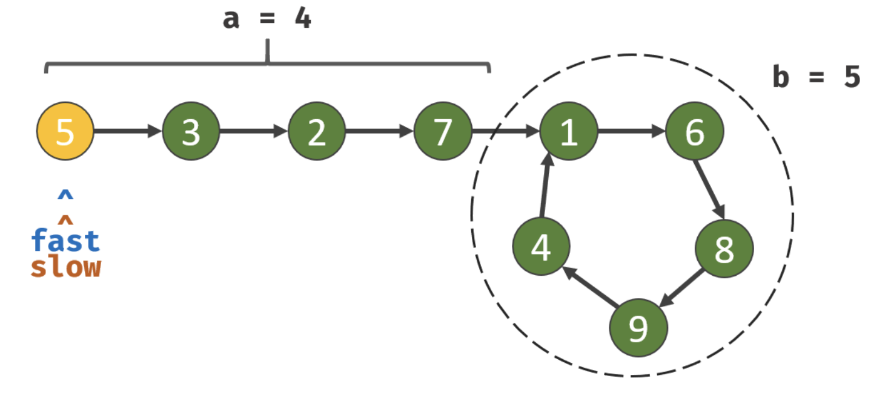
设：
- 环外长度是 a
- 环内（环的周长）是 b
- 快指针速度是慢指针速度的 2 倍
- x表示: 慢指针已经越过了环的入口后继续走的步数
第一次相遇时，慢指针走了 a + x，那快指针走了 (a + x) 的2倍即为2 * (a + x)，且快指针比慢指针多走了环的整数k倍 k * b，即：
2(a + x) = a + x + kb （k 是整数）
推导得出：a = kb - x
这意味着，从起点走 a 步（让慢指针重新从 0 出发），以及从相遇点走 x 步（当前快慢指针的位置, 为啥是x? 因为a = kb - x的kb - x），都会到达同一个环的入口点。
public class Solution { |
字符串
lc28 - 实现strStr() - 20240923
暴力解法-掌握这个暴力解法即可
class Solution { |
KMP不要求-面试基本不会出的-背代码就没意思了
- https://programmercarl.com/0028.实现strStr.html#算法公开课
- https://leetcode.com/problems/find-the-index-of-the-first-occurrence-in-a-string/

看一下如何利用 前缀表找到 当字符不匹配的时候应该指针应该移动的位置。如上动画所示：
找到的不匹配的位置， 那么此时我们要看它的前一个字符的前缀表的数值是多少。
为什么要前一个字符的前缀表的数值呢，因为要找前面字符串的最长相同的前缀和后缀。
所以要看前一位的 前缀表的数值。
前一个字符的前缀表的数值是2， 所以把下标移动到下标2的位置继续比配。 可以再反复看一下上面的动画。
最后就在文本串中找到了和模式串匹配的子串了。
class Solution { |
lc459 - 重复的子字符串-暴力解法-掌握这个暴力解法即可
- https://programmercarl.com/0459.重复的子字符串.html#算法公开课
- https://leetcode.com/problems/repeated-substring-pattern/
// 作者：力扣官方题解 |
栈与队列
诀窍
- 当遇到这类问题就要用栈了:
- 栈在系统中的路径问题, 如: 简化路径
cd a/b/c/../../ - 括号匹配问题, 如: 给定一个只包括
'('，')'，'{'，'}'，'['，']'的字符串，判断字符串是否有效。 - 字符串去重问题, 如: lc1047. 删除字符串中的所有相邻重复项
- 栈在系统中的路径问题, 如: 简化路径
- 队列反而是在树的层序遍历里用的较多
单调栈-monotonic stack
单调栈（Monotonic Stack） 是一种在栈的基础上构建的具有单调性（递增或递减）的特殊数据结构，主要用于高效解决“下一个更大元素”、“区间最大/最小值”、“柱状图最大矩形”等一类具有区间性质的单调性问题。
定义:
- 单调递增栈：栈内元素从栈底到栈顶递增
- 单调递减栈：栈内元素从栈底到栈顶递减
栈中可以存放原始值，也可以存放索引（常用于记录位置关系）
核心思想: 利用栈维护某种单调性，在遍历数组时边处理边维护单调结构，从而实现一次遍历内快速确定左右边界或最值的位置。
经典应用场景:
| 典型题型 | 使用方式 |
|---|---|
| 下一个更大/小元素 | 单调递减/递增栈 |
| 栈中每个元素的左右第一个更大/小值 | 维护索引 + 单调栈 |
| 柱状图最大矩形（Leetcode 84） | 单调递增栈，求每个柱子的左右边界 |
| 滑动窗口最大值（优化解法） | 单调队列（与单调栈类似思想） |
| 股票价格跨度（Leetcode 901） | 单调递减栈维护连续上涨跨度 |
| lc739-每日温度 | 单调栈 |
例子：找每个元素右边第一个比它大的数
int[] arr = {2, 1, 5, 3, 6}; |
含义：
- 单调递减栈：从右往左遍历，栈中维持一个从大到小的数列
- 每个元素右边第一个比它大的元素，就是栈顶
时间复杂度: 所有单调栈相关算法通常为 O(n)：每个元素最多入栈一次、出栈一次
总结: 单调栈 = 栈 + 有序性约束，用于高效查找下一个更大/更小值、区间边界等结构性问题。是面试中非常常见的数据结构技巧之一。
单调栈经典题-lc739-每日温度
Given an array of integers temperatures represents the daily temperatures, return an array answer such that answer[i] is the number of days you have to wait after the ith day to get a warmer temperature. If there is no future day for which this is possible, keep answer[i] == 0 instead.
Example 1:
- Input: temperatures =
[73,74,75,71,69,72,76,73] - Output:
[1,1,4,2,1,1,0,0]
Example 2:
- Input: temperatures =
[30,40,50,60] - Output:
[1,1,1,0]
Example 3:
- Input: temperatures =
[30,60,90] - Output:
[1,1,0]
class Solution { |
lc239 - Sliding Window Maximum
- https://programmercarl.com/0239.滑动窗口最大值.html#其他语言版本
- https://leetcode.com/problems/sliding-window-maximum/
//利用双端队列手动实现单调队列 |
二叉树
诀窍
- 二叉树的算法题型主要是用来培养递归思维的，而层序遍历属于迭代遍历，也比较简单
- 一共只有三种题目:
- 直接通过 dfs/bfs 可以计算的类型
- 路径类
- 最小祖先类
- 二叉树最重要的是层序遍历的模板, 可以解决
70%的二叉树题目 - 路径题和公共祖先题和深度高度的题一般才会用到
递归, 其他大多数时候都可以层序遍历 / 前中序遍历的迭代法解决 - 仔细观察，前中后序位置的代码，能力依次增强。
- 前序位置的代码只能从函数参数中获取父节点传递来的数据。
- 中序位置的代码不仅可以获取参数数据，还可以获取到左子树通过函数返回值传递回来的数据。
- 后序位置的代码最强，不仅可以获取参数数据，还可以同时获取到左右子树通过函数返回值传递回来的数据。
- 所以，某些情况下把代码移到后序位置效率最高；有些事情，只有后序位置的代码能做
- 二叉树递归写法诀窍, 递归函数什么时候需要返回值？什么时候不需要返回值？这里总结如下三点：
- 如果需要搜索整棵二叉树且不用处理递归返回值，递归函数就不要返回值。（这种情况就是本文下半部分介绍的113.路径总和ii, https://programmercarl.com/0112.路径总和.html#相关题目推荐）
- 如果需要搜索整棵二叉树且需要处理递归返回值，递归函数就需要返回值。 （这种情况我们在236. 二叉树的最近公共祖先, https://programmercarl.com/0236.二叉树的最近公共祖先.html#算法公开课）
- 如果要搜索其中一条符合条件的路径，那么递归一定需要返回值，因为遇到符合条件的路径了就要及时返回。（这种情况符合: https://programmercarl.com/0112.路径总和.html#算法公开课）
层序(相当重要)


- 注意
while (len > 0) { }这个代码块里的就是同一层的结点处理 - 掌握了这个模板, 可以解决 70% 的二叉树题目
class Solution { |
前序(迭代法重要)

- 普通二叉树常用
- 前序遍历是中左右，每次先处理的是中间节点，那么先将根节点放入栈中，然后将右孩子加入栈，再加入左孩子。
- 为什么要先加入 右孩子，再加入左孩子呢？ 因为这样出栈的时候才是中左右的顺序。
- 掌握了之后可以求
路径问题
class Solution { |
中序(迭代法重要)

- 二叉搜索树BST常用, 因为 BST 的 中序遍历 出来是个有序的递增数组)
- 中序遍历是左中右，先访问的是二叉树顶部的节点，然后一层一层向下访问，直到到达树左面的最底部，再开始处理节点（也就是在把节点的数值放进result数组中），这就造成了处理顺序和访问顺序是不一致的。
- 那么在使用迭代法写中序遍历，就需要借用指针的遍历来帮助访问节点，栈则用来处理节点上的元素。
class Solution { |
后序(迭代法不重要,但递归解法的理解很重要)
- 后序
迭代法很少用到, 会前序按照以下方法就会写后序:- 先序遍历是
中左右 - 调整代码左右循序
- 变成
中右左-> 反转result数组 ->左右中 - 后序遍历是
左右中
- 先序遍历是
- 后序遍历的
递归法用得着, 那种需要从树底下往上走来统计信息的就用得到, 如公共祖先这种题就需要后序遍历递归法
举些具体的例子来感受下它们的能力区别。现在给你一棵二叉树，我问你两个简单的问题：
- 如果把根节点看做第 1 层，如何打印出每一个节点所在的层数？
- 如何打印出每个节点的左右子树各有多少节点？
第一个问题可以这样写代码：// 二叉树遍历函数
void traverse(TreeNode root, int level) {
if (root == null) {
return;
}
// 前序位置
printf("Node %s at level %d", root.val, level);
traverse(root.left, level + 1);
traverse(root.right, level + 1);
}
// 这样调用
traverse(root, 1);
第二个问题可以这样写代码：
// 定义：输入一棵二叉树，返回这棵二叉树的节点总数 |
这两个问题的根本区别在于:
一个节点在第几层，你从根节点遍历过来的过程就能顺带记录，用递归函数的参数就能传递下去；而以一个节点为根的整棵子树有多少个节点，你必须遍历完子树之后才能数清楚，然后通过递归函数的返回值拿到答案。
结合这两个简单的问题，你品味一下后序位置的特点，只有后序位置才能通过返回值获取子树的信息。
那么换句话说，一旦你发现题目和子树有关，那大概率要给函数设置合理的定义和返回值，在后序位置写代码了。
路径(重要)
- https://programmercarl.com/0257.二叉树的所有路径.html#思路
- https://leetcode.com/problems/binary-tree-paths/
- 学会后可以解”求根到叶子节点数字之和”: https://leetcode.com/problems/sum-root-to-leaf-numbers/
- https://leetcode.com/problems/path-sum/description/
https://leetcode.com/problems/path-sum-ii/description/
Given the root of a binary tree and an integer targetSum, return all root-to-leaf paths where the sum of the node values in the path equals targetSum. Each path should be returned as a list of the node values, not node references.
A root-to-leaf path is a path starting from the root and ending at any leaf node. A leaf is a node with no children.
- 要求从根节点到叶子的路径，所以需要前序遍历，这样才方便让父节点指向孩子节点，找到对应的路径。
- 注意其中的回溯, 特别是 count 的回溯注释, 方便深刻的理解回溯
class Solution { |
高度
- 二叉树某个节点的 高度
==这个节点的深度 ：指从该节点到叶子节点的最长简单路径边的条数或者节点数 - 二叉树某个节点的 深度
==这个节点的高度 ：指从该节点到该节点的最长简单路径边的条数或者节点数 - 二叉树的 最大深度 == 根节点的高度 ：指从
根节点到该节点的最长简单路径边的条数或者节点数 - 根节点的 高度 就是二叉树的 最大深度
// 计算某个节点的高度, 代码和求某个节点的深度的代码一致 |
深度
- 求深度用
层序遍历是最适合的最直观容易理解 - 二叉树的深度: 根节点到最远叶子节点的最长路径上的节点数。
- 叶子节点: 是指没有子节点的节点。
// 计算某个节点的高度, 代码和求某个节点的深度的代码一致 |
最大深度
- https://programmercarl.com/0104.二叉树的最大深度.html
- https://leetcode.com/problems/maximum-depth-of-binary-tree/
使用迭代法的话，使用层序遍历是最为合适的，因为最大的深度就是二叉树的层数，和层序遍历的方式极其吻合。
在二叉树中，一层一层的来遍历二叉树，记录一下遍历的层数就是二叉树的深度，
迭代法
层序遍历:
class Solution { |
递归法1-回溯(重要)
- 掌握后可以解树的最小深度, lc111: https://leetcode.com/problems/minimum-depth-of-binary-tree/description/
- 这个递归法中的
depth的计算写法 对于很多用到深度信息的二叉树的递归解都很有帮助, 算是个模板套路
class Solution { |
递归法2
后序遍历, 掌握后可以解 树的最大直径 lc543: https://leetcode.com/problems/diameter-of-binary-tree/description/):
class Solution { |
最小深度
- https://programmercarl.com/0111.二叉树的最小深度.html#算法公开课
- https://leetcode.com/problems/minimum-depth-of-binary-tree/description/
最小深度: 是从根节点到最近叶子节点的最短路径上的节点数量。
迭代法
层序遍历:
class Solution { |
递归法-回溯
class Solution { |
最近公共祖先(重要)
- LeetCode-236
- Reference
- 自底向上查找就好了，这样就可以找到公共祖先了。那么二叉树如何可以自底向上查找呢？回溯啊，二叉树回溯的过程就是从低到上。
后序遍历（左右中）就是天然的回溯过程，可以根据左右子树的返回值，来处理中节点的逻辑。 - 如何判断一个节点是节点q和节点p的公共祖先呢? 判断逻辑是 如果递归遍历遇到q，就将q返回，遇到p 就将p返回，那么如果 左右子树的返回值都不为空，说明此时的中节点，一定是q 和p 的最近祖先。
- 为什么left为空，right不为空，目标节点通过right返回呢？如图：
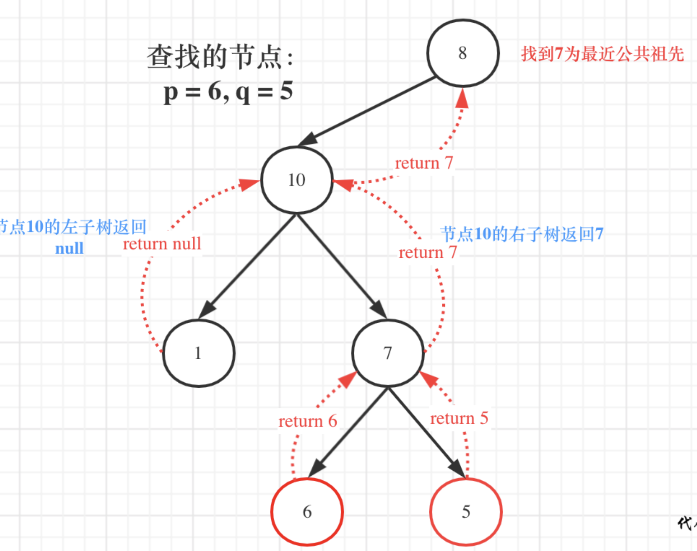
- 图中节点10的左子树返回null，右子树返回目标值7，那么此时节点10的处理逻辑就是把右子树的返回值（最近公共祖先7）返回上去！
总流程图:
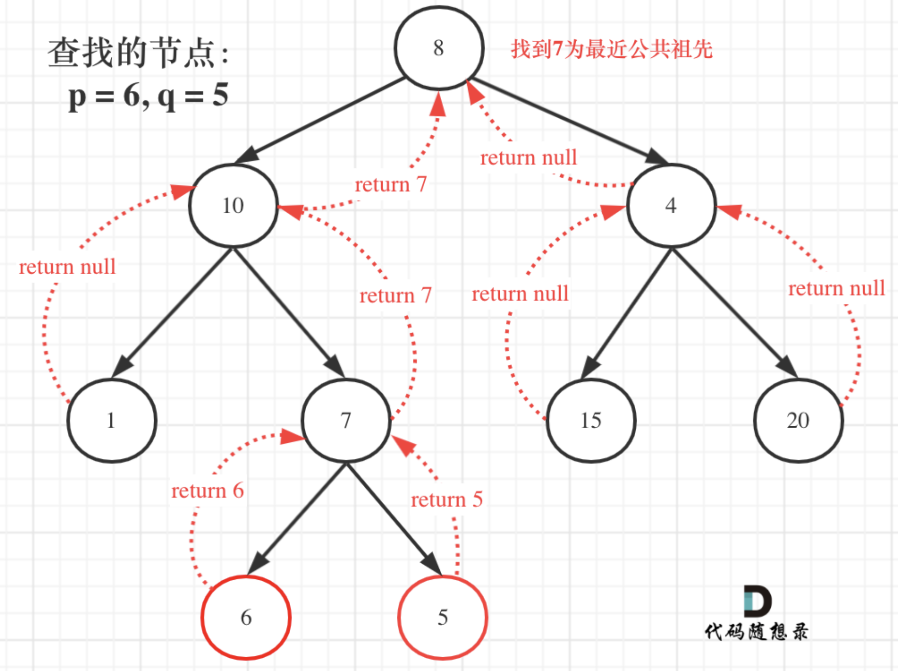
class Solution { |
二叉搜索树-诀窍(重要)
- 二叉搜索树的中序遍历是个递增有序数组, 利用好这一点非常方便解题
- 二叉搜索树的迭代遍历很好写, 大多数时候用不到递归方式来解题
- 空二叉树是二叉搜索树
- https://labuladong.online/algo/data-structure/bst-part2/#一、判断-bst-的合法性
https://leetcode.com/problems/validate-binary-search-tree/
Given the root of a binary tree, determine if it is a valid binary search tree (BST).
boolean isValidBST(TreeNode root) { |
但是这个算法出现了错误，BST 的每个节点应该要小于右边子树的所有节点，
错误的原因在于，对于每一个节点 root，代码值检查了它的左右孩子节点是否符合左小右大的原则；但是根据 BST 的定义，root 的整个左子树都要小于 root.val，整个右子树都要大于 root.val。
问题是，对于某一个节点 root，他只能管得了自己的左右子节点，怎么把 root 的约束传递给左右子树呢？请看正确的代码：
// https://labuladong.online/algo/data-structure/bst-part2/#一、判断-bst-的合法性 |
我们通过使用辅助函数，增加函数参数列表，在参数中携带额外信息，将这种约束传递给子树的所有节点，这也是二叉树算法的一个小技巧吧。
构造二叉树
前序和中序可以唯一确定一棵二叉树。后序和中序可以唯一确定一棵二叉树。那么前序和后序可不可以唯一确定一棵二叉树呢？
前序和后序不能唯一确定一棵二叉树！，因为没有中序遍历无法确定左右部分，也就是无法分割。
举一个例子：
106.从中序与后序遍历序列构造二叉树2
tree1 的前序遍历是[1 2 3]， 后序遍历是[3 2 1]。
tree2 的前序遍历是[1 2 3]， 后序遍历是[3 2 1]。
那么tree1 和 tree2 的前序和后序完全相同，这是一棵树么，很明显是两棵树！
所以前序和后序不能唯一确定一棵二叉树！
根据前中序构造二叉树
105. Construct Binary Tree from Preorder and Inorder Traversal
Given two integer arrays preorder and inorder where preorder is the preorder traversal of a binary tree and inorder is the inorder traversal of the same tree, construct and return the binary tree.
- 代码, 参考: https://leetcode.cn/problems/construct-binary-tree-from-preorder-and-inorder-traversal/solutions/255811/cong-qian-xu-yu-zhong-xu-bian-li-xu-lie-gou-zao-9/
- 图, 参考: https://leetcode.cn/problems/construct-binary-tree-from-preorder-and-inorder-traversal/solutions/2361558/105-cong-qian-xu-yu-zhong-xu-bian-li-xu-4lvkz/

class Solution { |
根据中后序构造二叉树

// 代码, 参考: https://leetcode.cn/problems/construct-binary-tree-from-preorder-and-inorder-traversal/solutions/255811/cong-qian-xu-yu-zhong-xu-bian-li-xu-lie-gou-zao-9/ |
回溯
诀窍与模板
- 回溯本质是dfs, 所以回溯的模板和图论的dfs模板极为类似
- https://programmercarl.com/回溯算法理论基础.html#理论基础
- 起名: 在回溯算法中，我的习惯是函数起名字为backtrack，这个起名大家随意。
- 返回值: 回溯算法中函数返回值一般为void。
- 参数: 因为回溯算法需要的参数可不像二叉树递归的时候那么容易一次性确定下来，所以一般是先写逻辑，然后需要什么参数，就填什么参数。
// DFS 算法把「做选择」「撤销选择」的逻辑放在 for 循环外面 |
看到了吧，你回溯算法必须把「做选择」和「撤销选择」的逻辑放在 for 循环里面，否则怎么拿到「树枝」的两个端点？
组合
- https://leetcode.com/problems/combinations/
- 参考1: https://programmercarl.com/0077.组合.html#算法公开课
- 参考2: https://github.com/no5ix/leetcode-master/blob/master/problems/0077.组合.md
给定两个整数 n 和 k，返回 1 ... n 中所有可能的 k 个数的组合。
示例: 输入: n = 4, k = 2 输出: [ [2,4], [3,4], [2,3], [1,2], [1,3], [1,4], ]
没有剪枝的版本

class Solution { |
剪枝的版本

图中每一个节点（图中为矩形），就代表本层的一个for循环，那么每一层的for循环从第二个数开始遍历的话，都没有意义，都是无效遍历。(因为如果for循环选择的起始位置之后的元素个数 已经不足 我们需要的元素个数了，那么就没有必要搜索了。)
所以，可以剪枝的地方就在递归中每一层的for循环所选择的起始位置。
注意代码中i，就是for循环里选择的起始位置。
for (int i = startIndex; i <= n; i++) {
接下来看一下优化过程如下：
- 已经选择的元素个数：
path.size(); - 还需要的元素个数为:
k - path.size(); - 在集合n中i最大可以从该起始位置开始遍历 :
n - (k - path.size()) + 1(备注:n - (k - path.size())就是表示从已经最大的数n往回退几个数再开始搜索遍历, 退几个数呢? 退k - path.size()个数, 后面多出来的那个+1是因为要包括起始位置，我们要是一个左闭的集合)
那为什么 n - (k - path.size()) + 1 有个+1呢? 因为包括起始位置，我们要是一个左闭的集合。
举个例子，n = 4，k = 3， 目前已经选取的元素为0个（即path.size()为0），n - (k - 0) + 1 即 4 - ( 3 - 0) + 1 = 2。
从2开始搜索都是合理的，可以是组合[2, 3, 4]。从”3”开始就不合理了, 因为只能[3, 4, ?], “4”后面没有了, 只有2个数字”3”和”4”能用.
这里大家想不懂的话，建议也举一个例子，就知道是不是要+1了。
所以优化之后的for循环是：
for (int i = startIndex; i <= n - (k - path.size()) + 1; i++) // i为本次搜索的起始位置
优化后整体代码 diff 如下：
class Solution { |
子集
给定一组不含重复元素的整数数组 nums，返回该数组所有可能的子集（幂集）。
说明：解集不能包含重复的子集。
示例:
输入: nums = [1,2,3]
输出:[
[3],
[1],
[2],
[1,2,3],
[1,3],
[2,3],
[1,2],
[]
]

求取子集问题，不需要任何剪枝！因为子集就是要遍历整棵树。
class Solution { |
全排列
给定一个 没有重复 数字的序列，返回其所有可能的全排列。
示例:
- 输入:
[1,2,3] - 输出:
[
[1,2,3],
[1,3,2],
[2,1,3],
[2,3,1],
[3,1,2],
[3,2,1]
]

首先排列是有序的，也就是说 [1,2] 和 [2,1] 是两个集合，这和之前分析的子集以及组合所不同的地方。
可以看出元素1在 [1,2]中已经使用过了，但是在 [2,1] 中还要在使用一次1，所以处理排列问题就不用使用 startIndex 了。
但排列问题需要一个 used 数组，标记已经选择的元素，如 used: [0, 1, 0] 表示第2个元素已经别用过了, 如图橘黄色部分所示
class Solution { |
图论
图的基本概念
二维坐标中，两点可以连成线，多个点连成的线就构成了图。
当然图也可以就一个节点，甚至没有节点（空图）
图的种类
整体上一般分为 有向图 和 无向图。
有向图是指 图中边是有方向的：
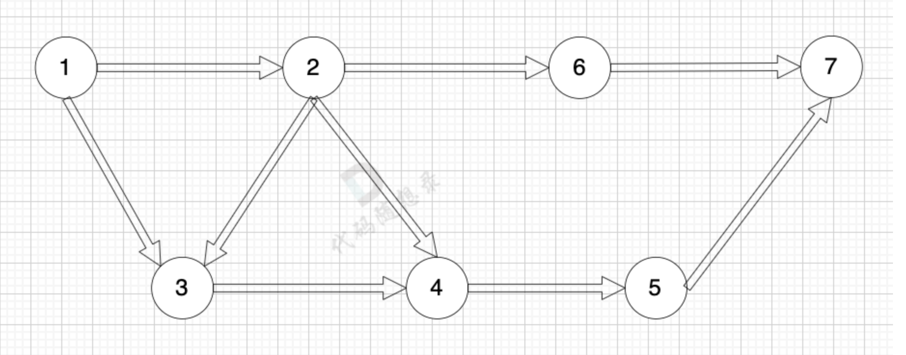
无向图是指 图中边没有方向：
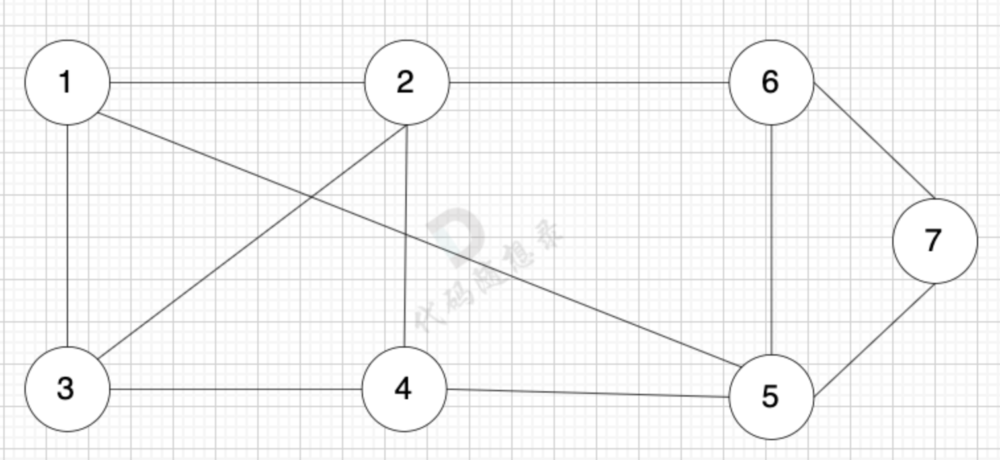
加权有向图，就是图中边是有权值的，例如：
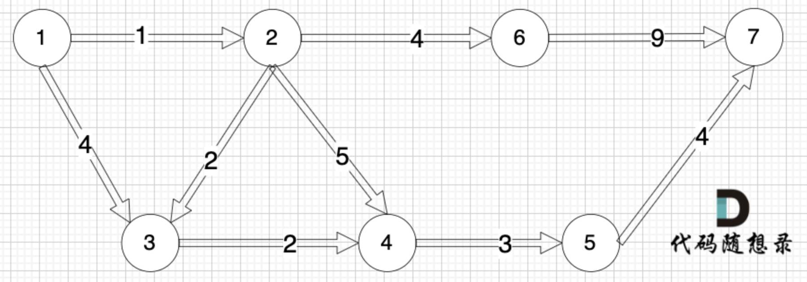
加权无向图也是同理。
度
无向图中有几条边连接该节点，该节点就有几度。
例如，该无向图中，节点4的度为5，节点6的度为3。
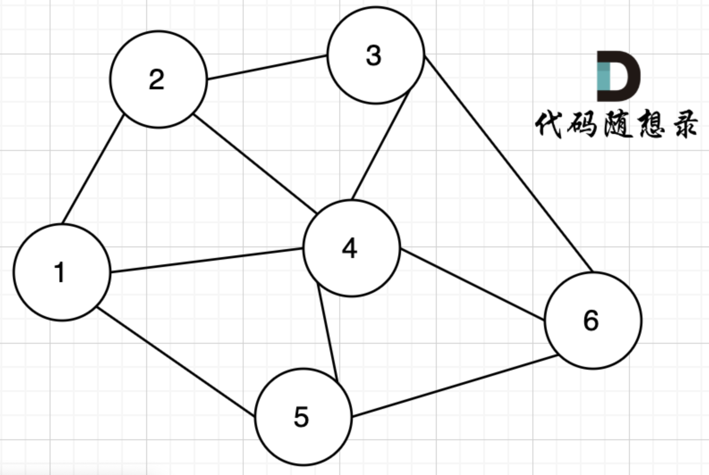
在有向图中，每个节点有出度和入度。
出度：从该节点出发的边的个数。
入度：指向该节点边的个数。
例如，该有向图中，节点3的入度为2，出度为1，节点1的入度为0，出度为2。
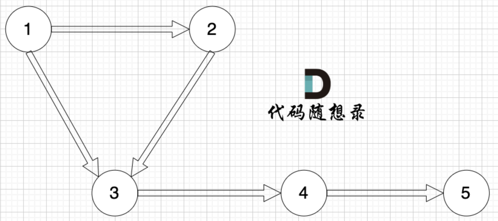
图的构造
我们如何用代码来表示一个图呢？
一般使用邻接表、邻接矩阵 或者用类来表示。
主要是 朴素存储、邻接表和邻接矩阵。
关于朴素存储，这是我自创的名字，因为这种存储方式，就是将所有边存下来。
例如图：
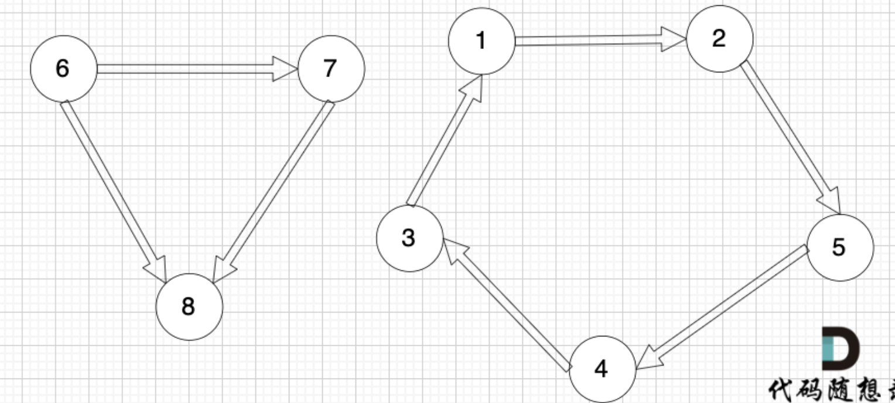
图中有8条边，我们就定义 8 2的数组，即有n条边就申请n 2，这么大的数组：
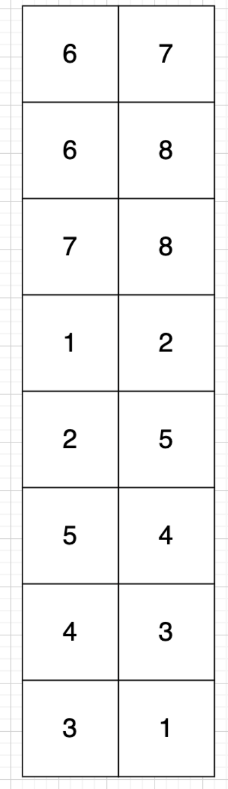
数组第一行：6 7，就表示节点6 指向 节点7，以此类推。
当然可以不用数组，用map，或者用 类 到可以表示出 这种边的关系。
这种表示方式的好处就是直观，把节点与节点之间关系很容易展现出来。
但如果我们想知道 节点1 和 节点6 是否相连，我们就需要把存储空间都枚举一遍才行。
这是明显的缺点，同时，我们在深搜和广搜的时候，都不会使用这种存储方式。
因为 搜索中，需要知道 节点与其他节点的链接情况，而这种朴素存储，都需要全部枚举才知道链接情况。
在图论章节的后面文章讲解中，我会举例说明的。大家先有个印象。
邻接矩阵
邻接矩阵 使用 二维数组来表示图结构。 邻接矩阵是从节点的角度来表示图，有多少节点就申请多大的二维数组。
例如： grid[2][5] = 6，表示 节点 2 连接 节点5 为有向图，节点2 指向 节点5，边的权值为6。
如果想表示无向图，即：grid[2][5] = 6，grid[5][2] = 6，表示节点2 与 节点5 相互连通，权值为6。
如图：
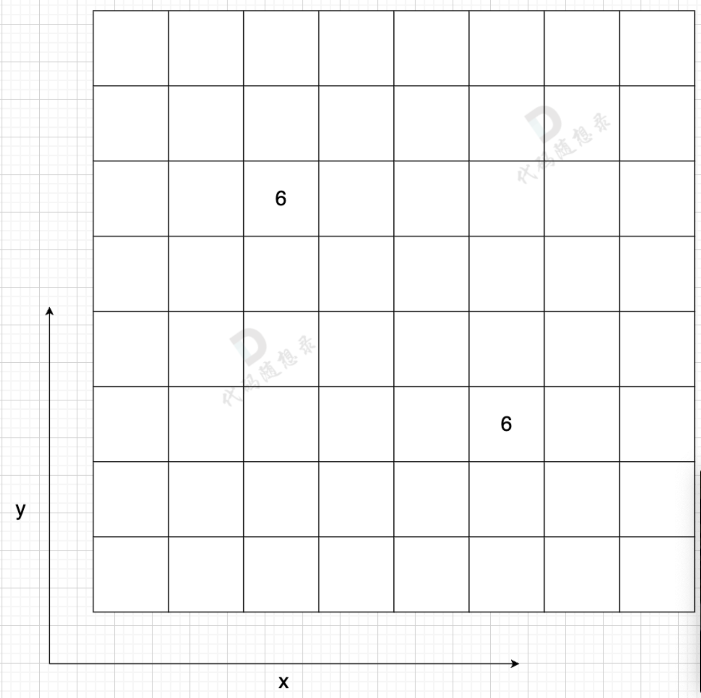
在一个 n （节点数）为8 的图中，就需要申请 8 * 8 这么大的空间。
图中有一条双向边，即：grid[2][5] = 6，grid[5][2] = 6
这种表达方式（邻接矩阵） 在 边少，节点多的情况下，会导致申请过大的二维数组，造成空间浪费。
而且在寻找节点连接情况的时候，需要遍历整个矩阵，即 n * n 的时间复杂度，同样造成时间浪费。
邻接矩阵的优点：
- 表达方式简单，易于理解
- 检查任意两个顶点间是否存在边的操作非常快
- 适合稠密图，在边数接近顶点数平方的图中，邻接矩阵是一种空间效率较高的表示方法。
缺点：
- 遇到稀疏图，会导致申请过大的二维数组造成空间浪费 且遍历 边 的时候需要遍历整个n * n矩阵，造成时间浪费
邻接表
邻接表 使用 数组 + 链表的方式来表示。 邻接表是从边的数量来表示图，有多少边 才会申请对应大小的链表。
邻接表的构造如图：
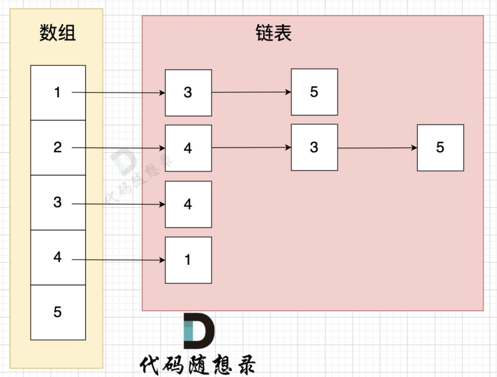
这里表达的图是：
- 节点1 指向 节点3 和 节点5
- 节点2 指向 节点4、节点3、节点5
- 节点3 指向 节点4
- 节点4指向节点1
有多少边 邻接表才会申请多少个对应的链表节点。
从图中可以直观看出 使用 数组 + 链表 来表达 边的连接情况 。
邻接表的优点：
- 对于稀疏图的存储，只需要存储边，空间利用率高
- 遍历节点连接情况相对容易
缺点：
- 检查任意两个节点间是否存在边，效率相对低，需要 O(V)时间，V表示某节点连接其他节点的数量。
- 实现相对复杂，不易理解
import java.util.*; |
dfs/bfs诀窍
dfs一般用来解决
求所有可达路径问题- 代码框架很类似回溯的代码框架, 因为回溯其实就是在做dfs
图论dfs框架 void dfs(参数) {
if (终止条件) {
存放结果;
return;
}
for (选择：本节点所连接的其他节点) {
处理节点;
dfs(图，选择的节点); // 递归
回溯，撤销处理结果
}
}
- 代码框架很类似回溯的代码框架, 因为回溯其实就是在做dfs
bfs一般用来解决
求最短路径问题- 只要BFS只要搜到终点一定是一条最短路径, 因为是一层一层一圈一圈来搜的, 搜到的就一定是最短的
- 代码框架很类似二叉树的bfs, 如下:
图论bfs框架 public static void bfs(char[][] grid, boolean[][] visited, int x, int y) {
// 定义四个方向
int[][] dir = {{0, 1}, {1, 0}, {-1, 0}, {0, -1}};
int rows = grid.length;
int cols = grid[0].length;
Queue<int[]> queue = new LinkedList<>(); // 定义队列
queue.offer(new int[]{x, y}); // 起始节点加入队列
visited[x][y] = true; // 标记为访问过
while (!queue.isEmpty()) {
int[] cur = queue.poll(); // 取出当前节点
int curx = cur[0], cury = cur[1];
for (int i = 0; i < 4; i++) { // 遍历四个方向
int nextx = curx + dir[i][0];
int nexty = cury + dir[i][1];
// 判断是否越界
if (nextx < 0 || nextx >= rows || nexty < 0 || nexty >= cols) continue;
if (!visited[nextx][nexty]) { // 该节点未访问
queue.offer(new int[]{nextx, nexty}); // 入队列
visited[nextx][nexty] = true; // 标记访问
}
}
}
}
拓扑排序
拓扑排序是经典的图论问题。
先说说 拓扑排序的应用场景。
大学排课，例如 先上A课，才能上B课，上了B课才能上C课，上了A课才能上D课，等等一系列这样的依赖顺序。 问给规划出一条 完整的上课顺序。
拓扑排序在文件处理上也有应用，我们在做项目安装文件包的时候，经常发现 复杂的文件依赖关系， A依赖B，B依赖C，B依赖D，C依赖E 等等。
给出一个 有向图，把这个有向图转成线性的排序 就叫拓扑排序。
当然拓扑排序也要检测这个有向图 是否有环，即存在循环依赖的情况，因为这种情况是不能做线性排序的。
所以拓扑排序也是图论中判断有向无环图的常用方法。
实现拓扑排序的算法有两种：卡恩算法（BFS）和DFS
卡恩1962年提出这种解决拓扑排序的思路
一般来说我们只需要掌握 BFS （广度优先搜索）就可以了
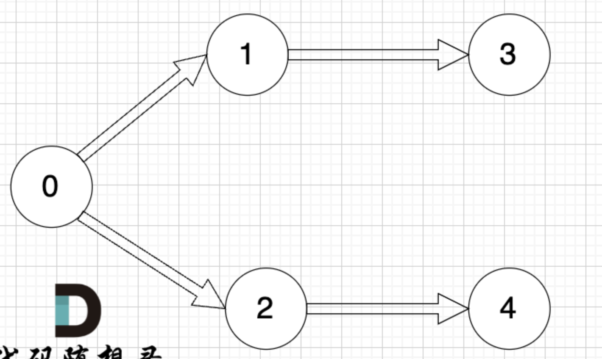
做拓扑排序的话，如果肉眼去找开头的节点，一定能找到 节点0 吧，都知道要从节点0 开始。
但为什么我们能找到 节点0呢，因为我们肉眼看着 这个图就是从 节点0出发的。
作为出发节点，它有什么特征？
你看节点0 的入度 为0 出度为2， 也就是 没有边指向它，而它有两条边是指出去的。
节点的入度表示 有多少条边指向它，节点的出度表示有多少条边 从该节点出发。
所以当我们做拓扑排序的时候，应该优先找 入度为 0 的节点，只有入度为0，它才是出发节点。
理解以上内容很重要！
接下来我给出 拓扑排序的过程，其实就两步：
- 找到入度为0 的节点，加入结果集
- 将该节点从图中移除
循环以上两步，直到 所有节点都在图中被移除了。
结果集的顺序，就是我们想要的拓扑排序顺序 （结果集里顺序可能不唯一）
模拟如下:
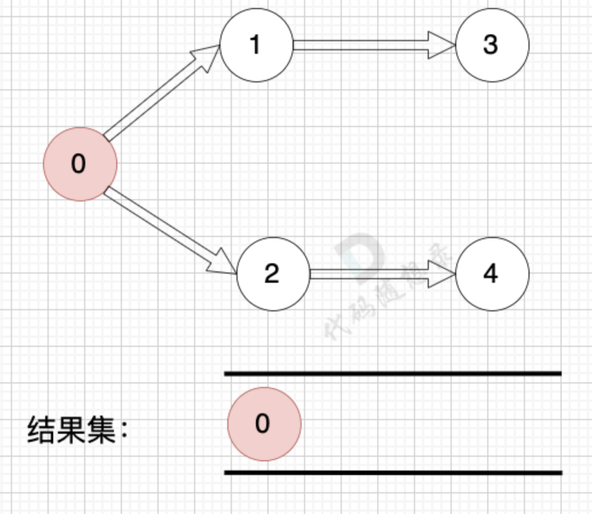
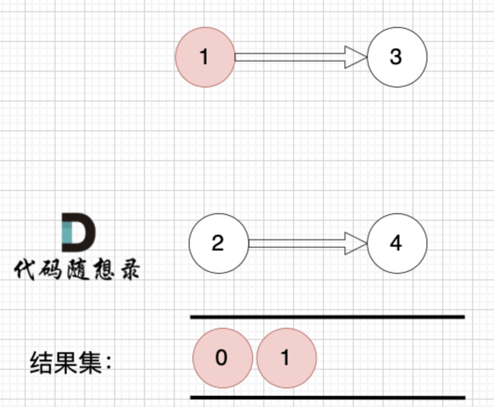
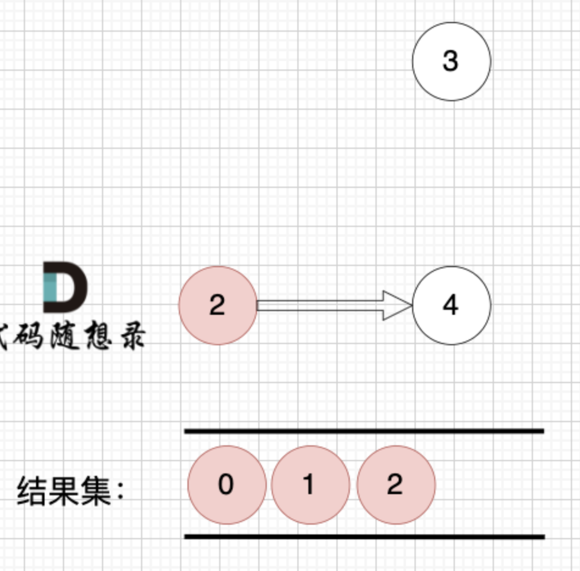
后面的过程一样的，节点3 和 节点4，入度都为0，选哪个都行。
最后结果集为： 0 1 2 3 4 。当然结果不唯一的。
判断有环
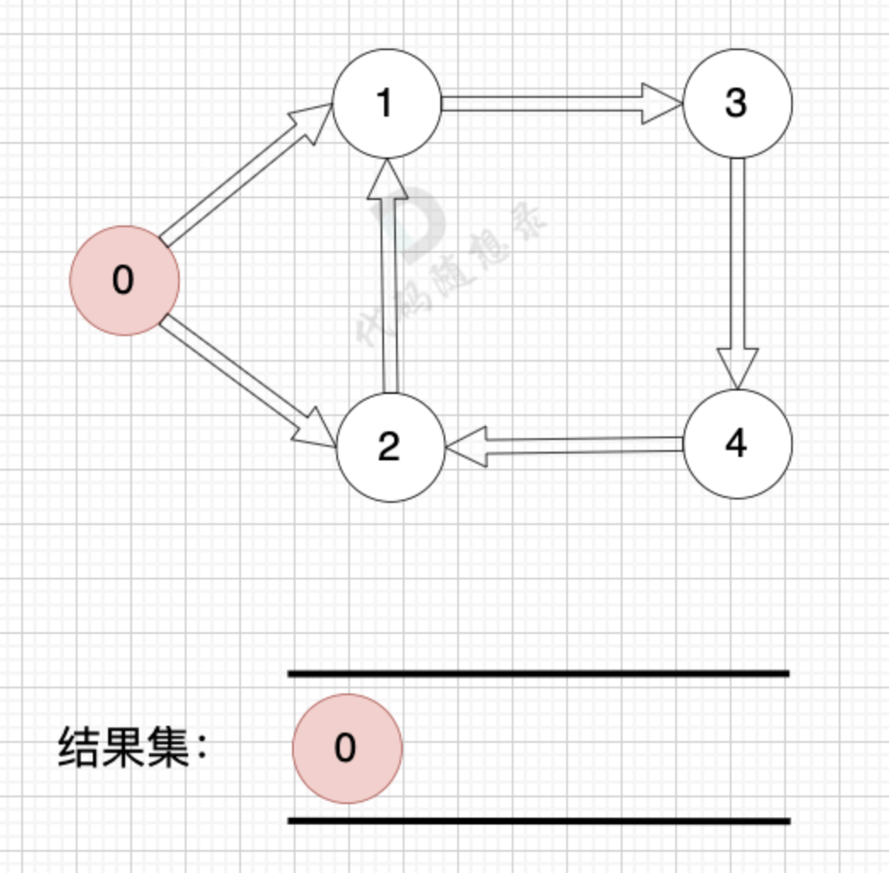
这个图，我们只能将入度为0 的节点0 接入结果集。
之后，节点1、2、3、4 形成了环，找不到入度为0 的节点了，所以此时结果集里只有一个元素。
那么如果我们发现结果集元素个数 不等于 图中节点个数，我们就可以认定图中一定有 有向环！
这也是拓扑排序判断有向环的方法。
通过以上过程的模拟大家会发现这个拓扑排序好像不难，还有点简单。
BFS实现的拓扑排序代码
import java.util.*; |
lc210-拓扑排序实战
There are a total of numCourses courses you have to take, labeled from 0 to numCourses - 1. You are given an array prerequisites where prerequisites[i] = [ai, bi] indicates that you must take course bi first if you want to take course ai.
For example, the pair [0, 1], indicates that to take course 0 you have to first take course 1.
Return the ordering of courses you should take to finish all courses. If there are many valid answers, return any of them. If it is impossible to finish all courses, return an empty array.
Example 1:
- Input: numCourses = 2, prerequisites =
[[1,0]] - Output:
[0,1] - Explanation: There are a total of 2 courses to take. To take course 1 you should have finished course 0. So the correct course order is [0,1].
Example 2:
- Input: numCourses = 4, prerequisites =
[[1,0],[2,0],[3,1],[3,2]] - Output:
[0,2,1,3] - Explanation: There are a total of 4 courses to take. To take course 3 you should have finished both courses 1 and 2. Both courses 1 and 2 should be taken after you finished course 0.So one correct course order is
[0,1,2,3]. Another correct ordering is[0,2,1,3].
Example 3:
- Input: numCourses = 1, prerequisites = []
- Output: [0]
// 作者：liweiwei1419 |
Union-Find并查集
首先要知道并查集可以解决什么问题呢？
并查集常用来解决连通性问题。
大白话就是当我们需要判断两个元素是否在同一个集合里的时候，我们就要想到用并查集。
并查集主要有两个功能：
- 将两个元素添加到一个集合中。
- 判断两个元素在不在同一个集合
接下来围绕并查集的这两个功能来展开讲解。
原理讲解
从代码层面，我们如何将两个元素添加到同一个集合中呢。
此时有录友会想到：可以把他放到同一个数组里或者set 或者 map 中，这样就表述两个元素在同一个集合。
那么问题来了，对这些元素分门别类，可不止一个集合，可能是很多集合，成百上千，那么要定义这么多个数组吗？
有录友想，那可以定义一个二维数组。
但如果我们要判断两个元素是否在同一个集合里的时候 我们又能怎么办？ 只能把而二维数组都遍历一遍。
而且每当想添加一个元素到某集合的时候，依然需要把把二维数组都遍历一遍，才知道要放在哪个集合里。
这仅仅是一个粗略的思路，如果沿着这个思路去实现代码，非常复杂，因为管理集合还需要很多逻辑。
那么我们来换一个思路来看看。
我们将三个元素A，B，C （分别是数字）放在同一个集合，其实就是将三个元素连通在一起，如何连通呢。
只需要用一个一维数组来表示，即：father[A] = B，father[B] = C 这样就表述 A 与 B 与 C连通了（有向连通图）。
代码如下：
// 将v，u 这条边加入并查集 |
可能有录友想，这样我可以知道 A 连通 B，因为 A 是索引下标，根据 father[A]的数值就知道 A 连通 B。那怎么知道 B 连通 A呢？
我们的目的是判断这三个元素是否在同一个集合里，知道 A 连通 B 就已经足够了。
这里要讲到寻根思路，只要 A ，B，C 在同一个根下就是同一个集合。
给出A元素，就可以通过 father[A] = B，father[B] = C，找到根为 C。
给出B元素，就可以通过 father[B] = C，找到根也为为 C，说明 A 和 B 是在同一个集合里。
大家会想第一段代码里find函数是如何实现的呢？其实就是通过数组下标找到数组元素，一层一层寻根过程，代码如下：
// 并查集里寻根的过程 |
如何表示 C 也在同一个元素里呢？ 我们需要 father[C] = C，即C的根也为C，这样就方便表示 A，B，C 都在同一个集合里了。
所以father数组初始化的时候要 father[i] = i，默认自己指向自己。
代码如下：
// 并查集初始化 |
最后我们如何判断两个元素是否在同一个集合里，如果通过 find函数 找到 两个元素属于同一个根的话，那么这两个元素就是同一个集合，代码如下：
// 判断 u 和 v是否找到同一个根 |
路径压缩
在实现 find 函数的过程中，我们知道，通过递归的方式，不断获取father数组下标对应的数值，最终找到这个集合的根。
搜索过程像是一个多叉树中从叶子到根节点的过程，如图：
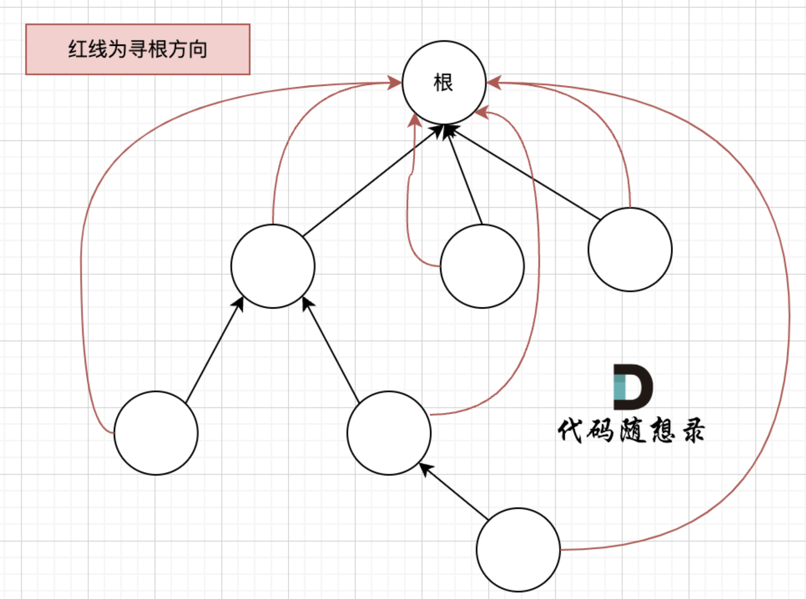
如果这棵多叉树高度很深的话，每次find函数 去寻找根的过程就要递归很多次。
我们的目的只需要知道这些节点在同一个根下就可以，所以对这棵多叉树的构造只需要这样就可以了，如图：
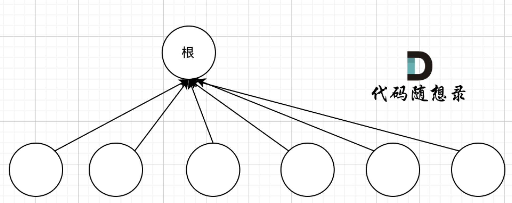
除了根节点其他所有节点都挂载根节点下，这样我们在寻根的时候就很快，只需要一步，
如果我们想达到这样的效果，就需要 路径压缩，将非根节点的所有节点直接指向根节点。
那么在代码层面如何实现呢？
我们只需要在递归的过程中，让 father[u] 接住 递归函数 find(father[u]) 的返回结果。
因为 find 函数向上寻找根节点，father[u] 表述 u 的父节点，那么让 father[u] 直接获取 find函数 返回的根节点，这样就让节点 u 的父节点 变成根节点。
代码如下，注意看注释，路径压缩就一行代码：
// 并查集里寻根的过程 |
相信不少录友在学习并查集的时候，对上面这三行代码实现的 find函数 很熟悉，但理解上却不够深入，仅仅知道这行代码很好用，不知道这里藏着路径压缩的过程。
所以对于算法初学者来说，直接看精简代码学习是不太友好的，往往忽略了很多细节。
代码模板
那么此时并查集的模板就出来了， 整体模板C++代码如下：
int n = 1005; // n根据题目中节点数量而定，一般比节点数量大一点就好 |
通过模板，我们可以知道，并查集主要有三个功能。
- 寻找根节点，函数：find(int u)，也就是判断这个节点的祖先节点是哪个
- 将两个节点接入到同一个集合，函数：join(int u, int v)，将两个节点连在同一个根节点上
- 判断两个节点是否在同一个集合，函数：isSame(int u, int v)，就是判断两个节点是不是同一个根节点
经典题-lc721-Accounts Merge
Given a list of accounts where each element accounts[i] is a list of strings, where the first element accounts[i][0] is a name, and the rest of the elements are emails representing emails of the account.
Now, we would like to merge these accounts. Two accounts definitely belong to the same person if there is some common email to both accounts. Note that even if two accounts have the same name, they may belong to different people as people could have the same name. A person can have any number of accounts initially, but all of their accounts definitely have the same name.
After merging the accounts, return the accounts in the following format: the first element of each account is the name, and the rest of the elements are emails in sorted order. The accounts themselves can be returned in any order.
Example 1:
Input: accounts = [["John","johnsmith@mail.com","john_newyork@mail.com"],["John","johnsmith@mail.com","john00@mail.com"],["Mary","mary@mail.com"],["John","johnnybravo@mail.com"]]
Output: [["John","john00@mail.com","john_newyork@mail.com","johnsmith@mail.com"],["Mary","mary@mail.com"],["John","johnnybravo@mail.com"]]
Explanation:
The first and second John’s are the same person as they have the common email "johnsmith@mail.com".
The third John and Mary are different people as none of their email addresses are used by other accounts.
We could return these lists in any order, for example the answer [['Mary', 'mary@mail.com'], ['John', 'johnnybravo@mail.com'], ['John', 'john00@mail.com', 'john_newyork@mail.com', 'johnsmith@mail.com']] would still be accepted.
Example 2:
Input: accounts = [["Gabe","Gabe0@m.co","Gabe3@m.co","Gabe1@m.co"],["Kevin","Kevin3@m.co","Kevin5@m.co","Kevin0@m.co"],["Ethan","Ethan5@m.co","Ethan4@m.co","Ethan0@m.co"],["Hanzo","Hanzo3@m.co","Hanzo1@m.co","Hanzo0@m.co"],["Fern","Fern5@m.co","Fern1@m.co","Fern0@m.co"]]
Output: [["Ethan","Ethan0@m.co","Ethan4@m.co","Ethan5@m.co"],["Gabe","Gabe0@m.co","Gabe1@m.co","Gabe3@m.co"],["Hanzo","Hanzo0@m.co","Hanzo1@m.co","Hanzo3@m.co"],["Kevin","Kevin0@m.co","Kevin3@m.co","Kevin5@m.co"],["Fern","Fern0@m.co","Fern1@m.co","Fern5@m.co"]]
// 本质是 图论中的连通分量问题。邮箱是节点，有边就表示两个邮箱属于同一人。 |
Quick Select
模板与诀窍
- 适合解决 Top K 问题, 因为最快
- 快速选择平均情况下，时间复杂度为 O(N)。
- 空间复杂度：O(N)。哈希表的大小为 O(N)，用于排序的数组的大小也为 O(N)，快速排序的空间复杂度最好情况为 O(logN)，最坏情况为 O(N)。
- 参考 algo_newbie ##普通快排 里的代码, 及其动画演示(safari可能播放不了视频), 帮助理解

Random random = new Random(); |
lc347 - Top K Frequent Elements
- https://leetcode.com/problems/top-k-frequent-elements/description/
- https://programmercarl.com/0347.前K个高频元素.html#其他语言版本
- Similar problem: https://leetcode.com/problems/kth-largest-element-in-an-array/
We should solve this kind of top-level problem using the “Quick Select” approach (it’s very similar to Quick Sort). Because its time complexity of O(n) is lower, this method is more efficient than the Heap-based approach with a time complexity of O(nlogn).
Referenced this: https://www.bilibili.com/video/BV1Bz4y117Fr/
- 时间复杂度：O(N)，其中 N 为数组的长度。
设处理长度为 N 的数组的时间复杂度为 f(N)。由于处理的过程包括一次遍历和一次子分支的递归，最好情况下，有 f(N)=O(N)+f(N/2)，根据 主定理，能够得到 f(N)=O(N)。 - 最坏情况下，每次取的中枢数组的元素都位于数组的两端，时间复杂度退化为 O(N)。但由于我们在每次递归的开始会先随机选取中枢元素，故出现最坏情况的概率很低。
- 平均情况下，时间复杂度为 O(N)。
- 空间复杂度：O(N)。哈希表的大小为 O(N)，用于排序的数组的大小也为 O(N)，快速排序的空间复杂度最好情况为 O(logN)，最坏情况为 O(N)。
import java.util.Map; |
岛屿问题
在 LeetCode 中，「岛屿问题」是一个系列系列问题，比如：
我们所熟悉的 DFS（深度优先搜索）问题通常是在树或者图结构上进行的。而我们今天要讨论的 DFS 问题，是在一种「网格」结构中进行的。岛屿问题是这类网格 DFS 问题的典型代表。网格结构遍历起来要比二叉树复杂一些，如果没有掌握一定的方法，DFS 代码容易写得冗长繁杂。
本文将以岛屿问题为例，展示网格类问题 DFS 通用思路，以及如何让代码变得简洁。
网格类问题的 DFS 遍历方法
网格问题的基本概念
我们首先明确一下岛屿问题中的网格结构是如何定义的，以方便我们后面的讨论。
网格问题是由 m×n 个小方格组成一个网格，每个小方格与其上下左右四个方格认为是相邻的，要在这样的网格上进行某种搜索。
岛屿问题是一类典型的网格问题。每个格子中的数字可能是 0 或者 1。我们把数字为 0 的格子看成海洋格子，数字为 1 的格子看成陆地格子，这样相邻的陆地格子就连接成一个岛屿。

岛屿问题示例
在这样一个设定下，就出现了各种岛屿问题的变种，包括岛屿的数量、面积、周长等。不过这些问题，基本都可以用 DFS 遍历来解决。
DFS 的基本结构
网格结构要比二叉树结构稍微复杂一些，它其实是一种简化版的图结构。要写好网格上的 DFS 遍历，我们首先要理解二叉树上的 DFS 遍历方法，再类比写出网格结构上的 DFS 遍历。我们写的二叉树 DFS 遍历一般是这样的：
void traverse(TreeNode root) { |
可以看到，二叉树的 DFS 有两个要素：「访问相邻结点」和「判断 base case」。
第一个要素是访问相邻结点。二叉树的相邻结点非常简单，只有左子结点和右子结点两个。二叉树本身就是一个递归定义的结构：一棵二叉树，它的左子树和右子树也是一棵二叉树。那么我们的 DFS 遍历只需要递归调用左子树和右子树即可。
第二个要素是 判断 base case。一般来说，二叉树遍历的 base case 是 root == null。这样一个条件判断其实有两个含义：一方面，这表示 root 指向的子树为空，不需要再往下遍历了。另一方面，在 root == null 的时候及时返回，可以让后面的 root.left 和 root.right 操作不会出现空指针异常。
对于网格上的 DFS，我们完全可以参考二叉树的 DFS，写出网格 DFS 的两个要素：
首先，网格结构中的格子有多少相邻结点？答案是上下左右四个。对于格子 (r, c) 来说（r 和 c 分别代表行坐标和列坐标），四个相邻的格子分别是 (r-1, c)、(r+1, c)、(r, c-1)、(r, c+1)。换句话说，网格结构是「四叉」的。

网格结构中四个相邻的格子
其次，网格 DFS 中的 base case 是什么？从二叉树的 base case 对应过来，应该是网格中不需要继续遍历、grid[r][c] 会出现数组下标越界异常的格子，也就是那些超出网格范围的格子。

网格 DFS 的 base case
这一点稍微有些反直觉，坐标竟然可以临时超出网格的范围？这种方法我称为「先污染后治理」—— 甭管当前是在哪个格子，先往四个方向走一步再说，如果发现走出了网格范围再赶紧返回。这跟二叉树的遍历方法是一样的，先递归调用，发现 root == null 再返回。
这样，我们得到了网格 DFS 遍历的框架代码：
void dfs(int[][] grid, int r, int c) { |
如何避免重复遍历
网格结构的 DFS 与二叉树的 DFS 最大的不同之处在于，遍历中可能遇到遍历过的结点。这是因为，网格结构本质上是一个「图」，我们可以把每个格子看成图中的结点，每个结点有向上下左右的四条边。在图中遍历时，自然可能遇到重复遍历结点。
这时候，DFS 可能会不停地「兜圈子」，永远停不下来，如下图所示：

DFS 遍历可能会兜圈子（动图）
如何避免这样的重复遍历呢？答案是标记已经遍历过的格子。以岛屿问题为例，我们需要在所有值为 1 的陆地格子上做 DFS 遍历。每走过一个陆地格子，就把格子的值改为 2，这样当我们遇到 2 的时候，就知道这是遍历过的格子了。也就是说，每个格子可能取三个值：
- 0 —— 海洋格子
- 1 —— 陆地格子（未遍历过）
- 2 —— 陆地格子（已遍历过）
我们在框架代码中加入避免重复遍历的语句：
void dfs(int[][] grid, int r, int c) { |

标记已遍历的格子
这样，我们就得到了一个岛屿问题、乃至各种网格问题的通用 DFS 遍历方法。以下所讲的几个例题，其实都只需要在 DFS 遍历框架上稍加修改而已。
小贴士：
在一些题解中，可能会把「已遍历过的陆地格子」标记为和海洋格子一样的 0，美其名曰「陆地沉没方法」，即遍历完一个陆地格子就让陆地「沉没」为海洋。这种方法看似很巧妙，但实际上有很大隐患，因为这样我们就无法区分「海洋格子」和「已遍历过的陆地格子」了。如果题目更复杂一点，这很容易出 bug。
岛屿问题的解法
理解了网格结构的 DFS 遍历方法以后，岛屿问题就不难解决了。下面我们分别看看三个题目该如何用 DFS 遍历来求解。
例题 0: 岛屿数量
LeetCode 200. Number of islands （Medium）
Given an m x n 2D binary grid grid which represents a map of ‘1’s (land) and ‘0’s (water), return the number of islands.
An island is surrounded by water and is formed by connecting adjacent lands horizontally or vertically. You may assume all four edges of the grid are all surrounded by water.
Example 1:
Input: grid = [ |
Example 2:
Input: grid = [ |
class Solution { |
例题 1：岛屿的最大面积
LeetCode 695. Max Area of Island （Medium）
Example 1:

- Input: grid =
[[0,0,1,0,0,0,0,1,0,0,0,0,0],[0,0,0,0,0,0,0,1,1,1,0,0,0],[0,1,1,0,1,0,0,0,0,0,0,0,0],[0,1,0,0,1,1,0,0,1,0,1,0,0],[0,1,0,0,1,1,0,0,1,1,1,0,0],[0,0,0,0,0,0,0,0,0,0,1,0,0],[0,0,0,0,0,0,0,1,1,1,0,0,0],[0,0,0,0,0,0,0,1,1,0,0,0,0]] - Output: 6
- Explanation: The answer is not 11, because the island must be connected 4-directionally.
Example 2:
- Input: grid =
[[0,0,0,0,0,0,0,0]] - Output: 0
给定一个包含了一些 0 和 1 的非空二维数组 grid，一个岛屿是一组相邻的 1（代表陆地），这里的「相邻」要求两个 1 必须在水平或者竖直方向上相邻。你可以假设 grid 的四个边缘都被 0（代表海洋）包围着。
找到给定的二维数组中最大的岛屿面积。如果没有岛屿，则返回面积为 0 。
这道题目只需要对每个岛屿做 DFS 遍历，求出每个岛屿的面积就可以了。求岛屿面积的方法也很简单，代码如下，每遍历到一个格子，就把面积加一。
int area(int[][] grid, int r, int c) { |
最终我们得到的完整题解代码如下：
public int maxAreaOfIsland(int[][] grid) { |
例题 2：填海造陆问题
LeetCode 827. Making A Large Island （Hard）
在二维地图上， 0 代表海洋，1代表陆地，我们最多只能将一格 0 （海洋）变成 1 （陆地）。进行填海之后，地图上最大的岛屿面积是多少？
这道题是岛屿最大面积问题的升级版。现在我们有填海造陆的能力，可以把一个海洋格子变成陆地格子，进而让两块岛屿连成一块。那么填海造陆之后，最大可能构造出多大的岛屿呢？
大致的思路我们不难想到，我们先计算出所有岛屿的面积，在所有的格子上标记出岛屿的面积。然后搜索哪个海洋格子相邻的两个岛屿面积最大。例如下图中红色方框内的海洋格子，上边、左边都与岛屿相邻，我们可以计算出它变成陆地之后可以连接成的岛屿面积为 7+1+2=10。

一个海洋格子连接起两个岛屿
然而，这种做法可能遇到一个问题。如下图中红色方框内的海洋格子，它的上边、左边都与岛屿相邻，这时候连接成的岛屿面积难道是 7+1+7 ？显然不是。这两个 7 来自同一个岛屿，所以填海造陆之后得到的岛屿面积应该只有 7+1=8。

一个海洋格子与同一个岛屿有两个边相邻
可以看到，要让算法正确，我们得能区分一个海洋格子相邻的两个 7 是不是来自同一个岛屿。那么，我们不能在方格中标记岛屿的面积，而应该标记岛屿的索引（下标），另外用一个数组记录每个岛屿的面积，如下图所示。这样我们就可以发现红色方框内的海洋格子，它的「两个」相邻的岛屿实际上是同一个。

标记每个岛屿的索引（下标）
可以看到，这道题实际上是对网格做了两遍 DFS：第一遍 DFS 遍历陆地格子，计算每个岛屿的面积并标记岛屿；第二遍 DFS 遍历海洋格子，观察每个海洋格子相邻的陆地格子。
这道题的基本思路就是这样，具体的代码还有一些需要注意的细节，但和本文的主题已经联系不大。各位可以自己思考一下如何把上述思路转化为代码。
例题 3：岛屿的周长
LeetCode 463. Island Perimeter （Easy）
给定一个包含 0 和 1 的二维网格地图，其中 1 表示陆地，0 表示海洋。网格中的格子水平和垂直方向相连（对角线方向不相连）。整个网格被水完全包围，但其中恰好有一个岛屿（一个或多个表示陆地的格子相连组成岛屿）。
岛屿中没有“湖”（“湖” 指水域在岛屿内部且不和岛屿周围的水相连）。格子是边长为 1 的正方形。计算这个岛屿的周长。

题目示例
实话说，这道题用 DFS 来解并不是最优的方法。对于岛屿，直接用数学的方法求周长会更容易。不过这道题是一个很好的理解 DFS 遍历过程的例题，不信你跟着我往下看。
我们再回顾一下 网格 DFS 遍历的基本框架：
void dfs(int[][] grid, int r, int c) { |
可以看到，dfs 函数直接返回有这几种情况：
!inArea(grid, r, c)，即坐标 (r, c) 超出了网格的范围，也就是我所说的「先污染后治理」的情况grid[r][c] != 1，即当前格子不是岛屿格子，这又分为两种情况：grid[r][c] == 0，当前格子是海洋格子grid[r][c] == 2，当前格子是已遍历的陆地格子
那么这些和我们岛屿的周长有什么关系呢？实际上，岛屿的周长是计算岛屿全部的「边缘」，而这些边缘就是我们在 DFS 遍历中，dfs 函数返回的位置。观察题目示例，我们可以将岛屿的周长中的边分为两类，如下图所示。黄色的边是与网格边界相邻的周长，而蓝色的边是与海洋格子相邻的周长。

将岛屿周长中的边分为两类
当我们的 dfs 函数因为「坐标 (r, c) 超出网格范围」返回的时候，实际上就经过了一条黄色的边；而当函数因为「当前格子是海洋格子」返回的时候，实际上就经过了一条蓝色的边。这样，我们就把岛屿的周长跟 DFS 遍历联系起来了，我们的题解代码也呼之欲出：
public int islandPerimeter(int[][] grid) { |
总结,
对比完三个例题的题解代码，你会发现网格问题的代码真的都非常相似。其实这一类问题属于「会了不难」类型。了解树、图的基本遍历方法，再学会一点小技巧，掌握网格 DFS 遍历就一点也不难了。